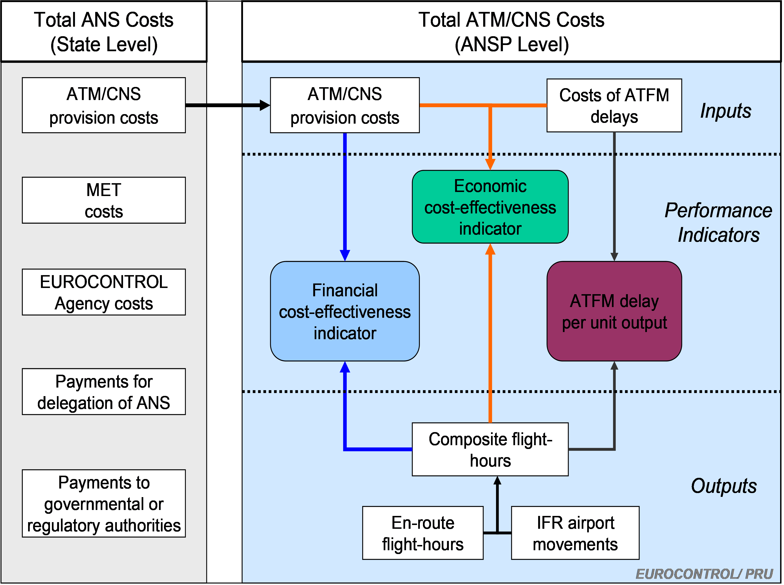

4 ATFM delays and cost-effectiveness performance
The quality of service provided by ANSPs has an impact on the efficiency of aircraft operations, which carry with them additional costs that need to be taken into consideration for a full economic assessment of ANSP performance. In the ACE benchmarking reports, an indicator of “economic” cost-effectiveness is computed at ANSP and Pan-European system levels by adding the ATM/CNS provision costs and the costs of ATFM ground delay, all expressed per composite flight-hour.

ATFM delays used in the ACE analysis are extracted from the Network Manager database. All delay causes (e.g. capacity, weather, etc.) are considered.
Only airports where the ANSPs are responsible to provide ATC services are taken into account when aggregating airport delays at ANSP level. This is verified each year during the ACE data validation process. Airport ATFM delays also include departure delays.
ATFM delays are calculated after post-ops and eNM adjustments, which entails a re-allocation of ATFM delays across ACCs in order to account for the initiatives taken to improve performance at network level. This process was initially launched in 2016 but the magnitude of ATFM delay reallocation became really significant in 2018 and 2019 due to the large extent of the measures implemented by the NM. In order to have consistent time series within the ACE report, the adjusted ATFM delays are used retroactively starting from 2016.
Delays are taken into account independently of their duration. There is no distinction between delays lower or higher than 15 minutes.
The cost of ATFM delay in this report is based on the European airline delay cost reference values, published by the University of Westminster1. In each new ACE report, the PRU expresses the cost of one minute of ATFM delay in the price base of the year under review, using the average European Union inflation rate published by EUROSTAT.
More detailed information can be found in the updated University of Westminster report, available for download on the PRC web-page (http://www.eurocontrol.int/ansperformance/prc).
European airline delay cost reference values (December 2015), available at: http://www.eurocontrol.int/publications/european-airline-delay-cost-reference-values.↩︎